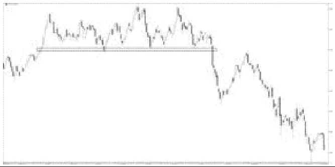
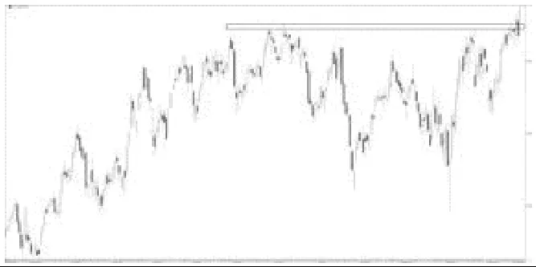
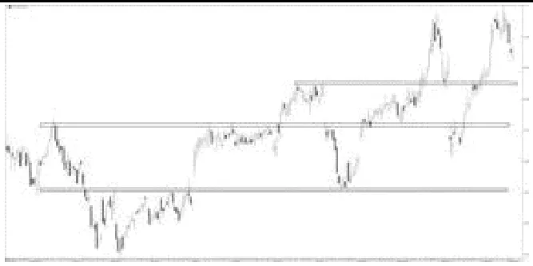
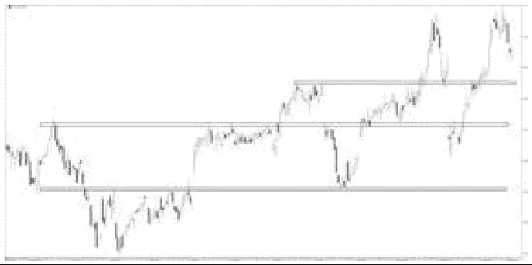

跳到教程正文
跳到教程正文从零开始的阅读教程 · 入门
支撑与阻力
支撑是价格过去跌到附近常停下来、反弹的区域；阻力是涨到附近常停下来、回落的区域。它们是观察位置，不是墙。
支撑与阻力 — 在图上把它标出来
构造的示意数据：为了把概念画清楚而专门生成，不是任何真实市场的历史，也不证明方法有效。标注由图中实际数值计算得出。
支撑和阻力画成“区”，用多次低点或高点的范围定上下沿：这里三次低点在 99.91–99.99，两次高点在 105.79–106.04。第40根才第一次收盘高于阻力区上沿；之前影线刺穿不算。突破后回落到第51根的 105.81，这就是常说的“回踩”，它停在原阻力附近只是一次观察，不保证以后都会守住。
停一下：先自己想，再看答案
只看影线刺穿，第几根K线就会被误当成“突破”？用收盘确认又是第几根？
影线最早在第37根高于 106.04；收盘确认要到第40根。两者之间的差别，就是为什么课文强调“看收盘，不看触碰”。
示意图只帮助辨认位置与定义；真实图表更杂乱，同一段走势常有多种画法。
第一次看交易图？先认识这些词
- K线、蜡烛图是什么？
- 一根像蜡烛的小图形，记录一段时间的开盘价、最高价、最低价和收盘价。选择“1天”，一根就是一天；选择“1小时”，一根就是一小时。
- “周期/长度14”是什么意思？
- 通常是用最近14根K线来计算，不一定是14天。在1小时图上，就是最近14根一小时K线。
- 主图、副图在哪？
- 主图是显示价格的大图。副图是下面单独的一小块图，数字的单位可能和价格完全不同，不能直接比大小。
- “信号”是什么意思？
- 只是一个值得留意的现象，例如两条线交叉了；不是保证涨跌，也不会因为你添加指标就自动下单。
- 趋势、动量、波动，有什么不同？
- 趋势看一段时间的大方向；动量看涨跌推进得快不快、有多用力；波动看价格折腾的幅度有多大。跌得很快可以是下跌动量强，绝不是只有上涨才叫强。
- 交叉、背离、确认是什么意思？
- 交叉是两条线穿过彼此；背离是价格和指标没有一起走出同样的新高或新低；确认通常是等这根K线结束或等后面几根走完，才能把现象认定下来。指标的标记画在过去，不代表当时就能看见。
把它想成生活里的东西
人群常在某个门口停住，但门也可能被挤开。
举个例子（虚构数字，只为讲解）
仅作示例：价格三次跌到99到101附近反弹，可把这一带画成支撑区，而不是只盯100.00。
是谁提出或推广的？
通用图表分析；单一创始人未确认 / Generic chart-analysis concept
支撑阻力来自长期市场实践，没有已确认的唯一首创者；不同作者对区域与确认条件有不同定义。
提出者、推广者和第一个实际使用的人是三回事。这里按可追溯资料写明，不把后来的推广者一律说成最早创始人。
打开后，按这几步看
- 先用日线或4小时图找明显多次转向的区域。
- 用水平线或矩形标出一小段价格带。
- 等价格再次到附近，看是停住、穿过还是收盘后站稳另一边。
- 记录突破后是否回到原区域，以及原支撑变阻力的可能。
最容易看错的地方
触碰次数多不等于永远有效；不要事后把线挪到每个顶底。
手把手找按钮：TradingView 与 AICoin
以下按电脑网页版编写，依据 2026-10-19 查阅的官方帮助。手机App的入口位置可能不同，部分功能还受账号权限和数据源限制。
这是绘图方法、分析框架或市场数据工具，不一定有一个“添加指标”按钮。按下面的条目说明找工具或数据；不要把理论体系当成一条自动计算的线。
照着做一遍：具体练习顺序
- 左侧绘图栏选择 Horizontal Line 或 Rectangle；在两次以上已出现反应的价格附近画线或窄区间。
- 打开对象设置标注价格范围；把后面的K线暂时遮住，逐根查看价格接近时是停留、反弹还是穿过。
在 AICoin 上，先看下面本条目的支持说明，再使用当前版本实际提供的画线或数据工具。没有同名功能时按已支持的平台或文字例子练习，不把搜索词当成平台一定有这个按钮。
TradingView
本条目搜索词：Horizontal Line / Horizontal Ray / Rectangle
左侧绘图工具手动画区域；自动社区脚本只是另一种定义，不会验证区域必定有效。
按上方本条目的工具或数据入口说明操作；没有确认支持时，不要假定有一键指标。先按本页前面的阅读步骤练习。
打开 TradingView 图表 ↗官方按钮位置说明AICoin
本条目搜索词：水平线 / 水平射线 / 矩形
从画线工具查找；具体菜单随版本变化，不需要寻找一个“支撑阻力理论”按钮。
按上方本条目的工具或数据入口说明操作；没有确认支持时，不要假定有一键指标。先按本页前面的阅读步骤练习。
打开 AICoin 图表 ↗官方图表操作说明该语言的视频教学
文字教程是本站整理；视频仍保留原来源，视频标题中的收益或胜率宣传不代表已验证。
书中讲解：欢迎来到真实的股市
出处：David Trullás《欢迎来到真实的股市》中文版 · 7. 支撑与阻力
西语原版：Bienvenidos al mundo real de la bolsa（Plataforma Editorial，2015，ISBN 9788416429103）
7. 支撑与阻力展开阅读 · 约 2100 字
如果你们已经踏入市场、在社交媒体上逛过，或读过证券投资方面的书籍，想必都听说过支撑和阻力。
那么，支撑与阻力究竟是什么？它们如何发挥作用？我们又能对它们抱有怎样的期待？
什么是支撑？
在股市中，支撑「是指买方需求阻止价格下跌的价位水平」。
我们应当事后、也就是回头去看，价格曾在哪些点位止跌；如此一来，我们总是结合先前已发生的情形来识别它们，因为你们已经知道，技术分析研究的就是大众情绪所留下的「笔迹」——这些支撑正是由我们每一个人所做的每一笔交易共同刻画出来的，并由此留下了那样的轨迹、那样的图形。
支撑的二次测试与价格反弹
有些支撑——和阻力一样——可以延续甚至数年之久，且往往与某些区域或心理整数位重合，比如西班牙国际银行（Banco Santander）的 4 欧元、IBEX35 的 10 000 点、黄金每盎司 1 200 美元，等等。
识别出支撑后，如果它名副其实地发挥了作用，价格就会反弹。面对这种情况，我们应抱有这样的预期。
对支撑的依托或测试次数越多，它就越牢固，价格在其作用下反弹的可靠性也就越高。
在支撑区域，成交量的放大——我们随后会讲到什么是成交量——同样是一个表明该支撑强劲的信号。
此外，如果对这些支撑区域的测试在时间上相隔甚远，那么该支撑不仅是一个支撑，更是一个心理位。整数关口亦是如此，比如西班牙国际银行的 4 欧元、苹果的 100 美元，等等。
若一个强劲的支撑被击穿，这种破位将极具力度，使价格一泻而下。
请看图7，其中 OHLC 在三次测试支撑后，于第四次尝试时向下强劲突破。

什么是阻力？
阻力「是指卖方供给阻止价格上行的价位水平」。
与识别支撑一样，我们通过技术分析和图表研究来识别阻力，在过往走势中寻找哪些区域曾充当阻力，以及哪些价位可能成为心理性阻力。
有些标的不存在阻力，因为它们可能正在刷新历史高点；2014 年底的苹果（Apple）便是如此。当一只标的毫无阻力可言（因为其历史走势中从未有过），我们就说它处于「自由上行」状态。
一旦识别出阻力，就应当在其作用下抑制价格的上行。
与支撑的情形相同，对阻力区域的测试次数越多、成交量放大越明显，其作为阻力的力度与可靠性就越高，价格回撤的可能性也就越大。
此外，如果这些对阻力区域的测试在时间上相隔甚远，那么该区域不仅是一个阻力，更是一个心理性阻力。
阻力的二次测试与价格回撤
与支撑相类似，阻力位上的整数关口同样具有心理属性。苹果的 100 美元曾是一个心理性阻力，后来转变为了心理性支撑；我们很快会看到这种角色的转换。S&P500 的 2 000 点也曾是一个心理性阻力。
如果一个强劲的阻力被击穿，这种突破将极具力度，使价格进入自由上行状态。
请看图8，Ferrovial 在多次尝试突破阻力后，向上强劲突破，并画出了一根极好的阳线，引我们做多入场。

面对支撑与阻力该如何操作？
在你们的学习过程中，常会听到一句话：「在支撑处买，在阻力处卖」。
很遗憾我无法认同这种说法，因为这是笔糟糕的买卖——因为你们刚刚才看到，支撑和阻力是会被突破的。
我建议你们观察价格面对这种情形时的表现，并据此做出决策。不要因为价格处在支撑区域就买入，要因为价格「在支撑处如何动作」而买入；如果它确实起到了支撑作用，就在价格重新启动上行时买入，要有耐心，不要抢跑。
同理，不要在阻力处卖出，要等价格做出选择——看阻力究竟是发挥作用，还是被突破。
总之，在两种情形下都切记：不要在支撑位挂买单，也不要在阻力位挂卖单；观察价格在其中的表现，然后顺势站在突破一方，或站在反弹一方。
支撑转为阻力，反之亦然
你们已经看到，支撑和阻力都会被突破。当这种情况发生时，它们会变成什么？
被跌破的支撑会变成阻力。
被突破的阻力会变成支撑。
如图9所示，可口可乐（Coca-Cola）出现了多次支撑破位，这些破位后的支撑变成了阻力；而当这些阻力被向上突破时，又再度变成了支撑。请注意，经过月复一月，那些价位水平始终作为支撑与阻力而活跃着。

回抽（Pull back）
回抽（pull back）是指价格向被突破或失守的价位水平所做的回撤。
这一概念既适用于支撑的突破，也适用于阻力的突破。我们来看支撑被跌破的情形。
支撑的失守会导致价格下跌，并使卖方接管市场（建立空头头寸）；通常——尽管并非总是如此——价格会回撤至被跌破支撑的附近。
判断我们是否面对一个回抽，一个很好的验证方法是：如果突破时成交量放大，那么在这次回撤中我们会观察到成交量较突破时缩小。
回抽未必精确地回到支撑位；无论是尚未触及就止步，还是短暂地刺穿它，都是有效的。
回抽是一个绝佳的时机、一份礼物、价格赐予我们的第二次机会，让我们可以搭上它。如果错过了突破，至少别错过回抽；我们应当顺势上车，尤其是当回抽结束后价格能够超越此前所触及的低点时，更该如此。
Banco Sabadell 在图10中给出了一个绝佳范例：在经历五个月的横盘、伴随着一条极为清晰的阻力线之后，它成功将其突破，随后从被突破阻力（此刻已转为支撑）的附近走出了一波回抽，重新启动上行，给了我们第二次上车的时机。

「图N」为原书插图编号，插图放在第一次提到它的段落之后；书中观点与例子属于作者，本站读图课另有独立说明，二者不代表买卖建议。
核对资料与延伸阅读
- David Trullás《欢迎来到真实的股市》中文版（7. 支撑与阻力）· 西语原版：Bienvenidos al mundo real de la bolsa（Plataforma Editorial，2015，ISBN 9788416429103）
- TradingView: Drawing tools available
- Publisher: Technical Analysis of Stock Trends
整理与核对：2026-10-19。例子用于帮助读懂图表，不代表买卖建议。